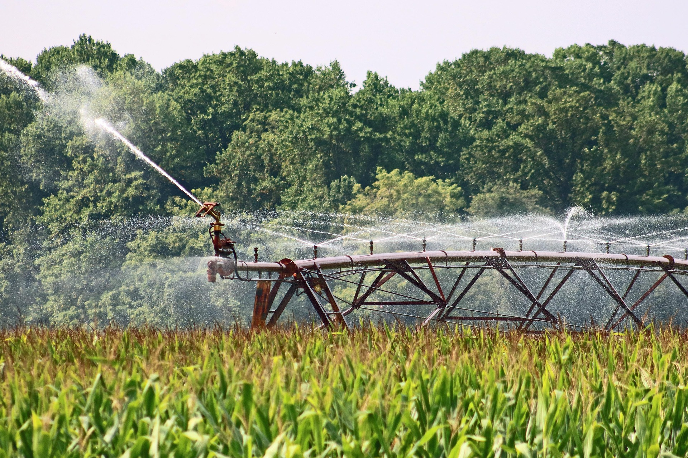
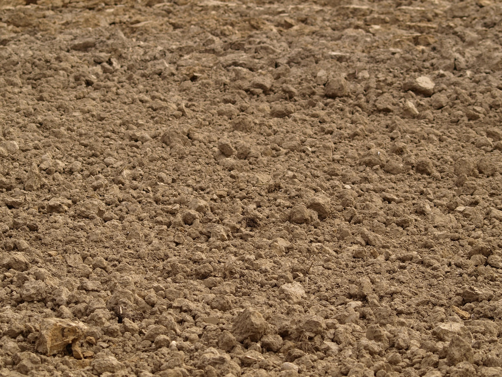

📸 Galeria



O agronegócio desempenha um papel essencial na produção de alimentos para a sociedade. Entretanto, produzir em grande escala exige responsabilidade e planejamento.
A sustentabilidade no campo busca equilibrar produtividade, preservação ambiental e desenvolvimento econômico, utilizando técnicas modernas que reduzem desperdícios e protegem os recursos naturais.
A água é um recurso indispensável para a agricultura. Sistemas modernos de irrigação ajudam a reduzir perdas, melhorar a eficiência e garantir o uso consciente desse recurso tão importante.
O solo saudável é fundamental para a produção agrícola. Técnicas sustentáveis ajudam a evitar erosões, preservar nutrientes e aumentar a produtividade sem comprometer o meio ambiente.
Sensores, drones e agricultura de precisão permitem monitorar plantações, reduzir desperdícios e aumentar a eficiência das atividades agrícolas.


Uso eficiente da água
Preservação do solo
Inovação tecnológica